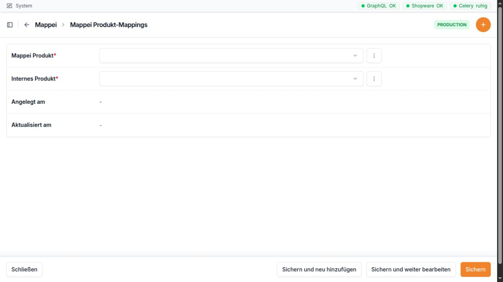

Mappei¶
Wofür ist dieser Bereich da?¶
Im Bereich Mappei sammelt die Bridge öffentlich sichtbare Produkt- und Preisinformationen von Mappei. So können Sie die Preise von Mappei mit den Preisen der eigenen Classei-Produkte vergleichen.
Der Bereich hat drei Seiten:
Produkte zeigt die gefundenen Mappei-Produkte und ihren letzten Preis.
Preise zeigt die gespeicherten Preisstände. Ein neuer Preisstand entsteht nur, wenn sich ein Preis oder eine Preisstaffel geändert hat.
Mappei <-> Classei verbindet ein Mappei-Produkt mit einem passenden Classei-Produkt.
Die Zuordnung ist wichtig. Erst durch sie kann ein Mappei-Preis beim passenden Classei-Produkt in einer Preisänderung angezeigt werden.
Wichtig: Mappei-Preise dienen als Vergleich. Sie ändern den eigenen Verkaufspreis nicht automatisch.


Bei einer Zuordnung wählen Sie links das Mappei-Produkt und rechts das passende interne Classei-Produkt.
Mappei-Produkte¶
Die Produktliste¶
Die Liste zeigt diese Spalten:
Spalte |
Einfache Erklärung |
|---|---|
Bild |
Kleines Produktbild von Mappei. Ein Strich bedeutet: Es wurde kein Bild gefunden. |
Artikelnummer |
Artikelnummer von Mappei. Sie kann auch einen Schrägstrich, einen Punkt oder Buchstaben enthalten. |
Name |
Bezeichnung des Produkts auf der Mappei-Seite. |
Hat Staffelpreise |
Zeigt an, ob für größere Mengen andere Preise gefunden wurden. |
Aktueller Preis |
Der neueste gespeicherte Netto-Preis. Ein Strich bedeutet: Es gibt noch keinen Preisstand. |
Zuletzt gescrapt |
Zeitpunkt, zu dem die Bridge das Produkt zuletzt von der Mappei-Seite eingelesen hat. |
Mapping |
Zeigt an, ob mindestens eine Verbindung zu einem Classei-Produkt besteht. |
Mit dem Filter Hat Staffelpreise können Sie Produkte mit und ohne Preisstaffel trennen.
Die Suche findet ein Produkt über:
die Mappei-Artikelnummer,
den Mappei-Produktnamen,
die ERP-Nummer eines verbundenen Classei-Produkts.
Dadurch können Sie auch mit einer bekannten Classei-ERP-Nummer nach dem passenden Mappei-Produkt suchen.
Die Produktseite und ihre Felder¶
Ein Klick auf ein Produkt öffnet die Produktseite. Die Daten kommen überwiegend von der Mappei-Webseite.
Feld |
Einfache Erklärung |
Bearbeitung |
|---|---|---|
Artikelnummer |
Eindeutige M appei-Artikelnummer. |
Nur Anzeige. Sie wird beim Einlesen übernommen. |
Name |
Produktname von Mappei. |
Kann sichtbar geändert werden. Beim nächsten Einlesen kann der Wert wieder durch die Angabe von Mappei ersetzt werden. |
URL |
Direkter Link zur Produktseite bei Mappei. Der Link öffnet sich in einem neuen Tab. |
Nur Anzeige. |
Bild |
Das von Mappei gelieferte Produktbild. |
Nur Anzeige. |
VPE Menge |
Anzahl der Einheiten
in einer Verpackung.
Bei |
Kann geändert werden. Eine falsche Menge verfälscht den Preisvergleich. |
VPE Einheit |
Bezeichnung der
Einheit, zum
Beispiel |
Kann geändert werden. |
Hat Staffelpreise |
Kennzeichen für ein Produkt mit Mengenpreisen. |
Kann geändert werden. Beim nächsten Einlesen kann Mappei die Angabe wieder ersetzen. |
Zuletzt gescrapt |
Zeitpunkt der letzten erfolgreichen Übernahme dieses Produkts. |
Nur Anzeige. |
Unter den Produktfeldern steht die Tabelle mit den bisherigen Mappei-Preissnapshots. Diese Tabelle ist nur zum Lesen. Sie zeigt die neuesten Einträge zuerst. Neue Preiszeilen können dort nicht von Hand angelegt oder gelöscht werden.
Zwei weitere Werte werden im Hintergrund übernommen, erscheinen aber nicht als eigenes Eingabefeld auf dieser Produktseite:
Wert |
Bedeutung |
|---|---|
Beschreibung |
Beschreibungstext von der Mappei-Produktseite. |
Bild-URL |
Internetadresse, von der das angezeigte Produktbild geladen wird. |
Die Verbindung zu Classei wird nicht auf dieser Seite gepflegt. Verwenden Sie dafür Mappei <-> Classei.
Hinweis: In der Oberfläche kann je nach Recht eine Schaltfläche zum Hinzufügen oder Kopieren sichtbar sein. Mappei-Produkte sollten im normalen Arbeitsablauf trotzdem durch das Einlesen entstehen. Die Artikelnummer ist auf der Produktseite nicht frei eintragbar.
Preise¶
Die Preisliste¶
Die Seite Preise ist ein Preisverlauf. Sie ist nur zum Lesen. Die neuesten Preisstände stehen oben.
Spalte und Feld |
Einfache Erklärung |
|---|---|
Mappei Produkt |
Das Produkt, zu dem der Preis gehört. Angezeigt werden Artikelnummer und Name. |
Gescrapt am |
Zeitpunkt, zu dem dieser Preisstand eingelesen wurde. |
Preis (netto) |
Normaler Netto-Preis der Mappei-Verpackung. |
Staffelpreis min |
Niedrigster gefundener Preis in der Preisstaffel. |
Staffelpreis max |
Höchster gefundener Preis in der Preisstaffel. |
Staffelmenge min (Stück) |
Kleinste gefundene Menge der Staffel, in Stück umgerechnet. |
Staffelmenge max (Stück) |
Größte gefundene Menge der Staffel, in Stück umgerechnet. |
Teilweise erfolgreich |
Warnt davor, dass die Bridge die Staffelmengen nicht sicher in Stück umrechnen konnte. Meist fehlte dafür die VPE-Menge. Die gefundenen Preise können trotzdem vorhanden sein. |
Leere Staffel-Felder sind bei einem Produkt ohne Staffelpreis normal.
Sie können nach der Mappei-Artikelnummer suchen. Mit dem Filter Teilweise erfolgreich finden Sie Preisstände, die geprüft werden sollten.
Ein Preisstand kann nicht von Hand angelegt oder geändert werden. Er wird automatisch erstellt. Bleiben alle Preisangaben gleich, entsteht keine neue Zeile. So bleibt die Liste übersichtlich und zeigt echte Preisänderungen.
So lesen Sie eine Preisstaffel¶
Die Bridge speichert den normalen Verpackungspreis und die beiden äußeren Werte der gefundenen Staffel:
Staffelpreis min ist der niedrigste gefundene Staffelpreis.
Staffelpreis max ist der höchste gefundene Staffelpreis.
Staffelmenge min und Staffelmenge max zeigen den kleinsten und größten gefundenen Mengenpunkt in Stück.
Die Liste zeigt damit einen schnellen Überblick. Sie zeigt nicht jede einzelne Zwischenstufe einer langen Preisstaffel.
Mappei <-> Classei¶
Wozu dient die Zuordnung?¶
Auf dieser Seite legen Sie fest, welche Produkte zusammengehören. Eine Zuordnung hat immer zwei Seiten:
ein Produkt von Mappei,
ein internes Produkt von Classei.
Eine Zuordnung ändert keine Produktdaten und keinen Verkaufspreis. Sie erlaubt nur den Vergleich.
Ein Mappei-Produkt darf mit mehreren Classei-Produkten verbunden sein. Auch ein Classei-Produkt darf mit mehreren Mappei-Produkten verbunden sein. Genau dieselbe Verbindung kann aber nicht zweimal gespeichert werden.
Die Zuordnungsliste¶
Spalte |
Einfache Erklärung |
|---|---|
Mappei Bild |
Kleines Bild des Mappei-Produkts. |
Mappei Produkt |
Artikelnummer und Name des ausgewählten Mappei-Produkts. |
Produktbild |
Erstes verfügbares Bild des Classei-Produkts. |
Internes Produkt |
ERP-Nummer und Name des Classei-Produkts. |
Die Suche berücksichtigt Artikelnummern und Namen auf beiden Seiten:
Mappei-Artikelnummer,
Mappei-Produktname,
Classei-ERP-Nummer,
Classei-Produktname.
Eine Zuordnung anlegen¶
Öffnen Sie Mappei <-> Classei.
Wählen Sie Mappei Produkt-Mapping hinzufügen.
Klicken Sie in das Feld Mappei Produkt und suchen Sie nach Artikelnummer oder Name.
Prüfen Sie das kleine Bild und wählen Sie das richtige Mappei-Produkt.
Klicken Sie in das Feld Internes Produkt und suchen Sie nach ERP-Nummer oder Name.
Prüfen Sie auch hier Bild, Nummer und Name.
Speichern Sie die Zuordnung.
Die beiden Auswahlfelder zeigen in der Trefferliste ein Produktbild, sofern eines vorhanden ist.
Feld |
Einfache Erklärung |
|---|---|
Mappei Produkt |
Das Produkt des Wettbewerbers. Suchen Sie möglichst mit der genauen Mappei-Artikelnummer. |
Internes Produkt |
Das passende Classei-Produkt. Suchen Sie möglichst mit der ERP-Nummer. |
Angelegt am |
Zeitpunkt, zu dem die Zuordnung angelegt wurde. Nur Anzeige. |
Aktualisiert am |
Zeitpunkt der letzten Änderung. Nur Anzeige. |
Beim Löschen einer Zuordnung wird nur die Verbindung entfernt. Die beiden Produkte bleiben bestehen. Danach fehlt der Mappei-Vergleich für diese Verbindung.
Wo erscheint der Vergleich?¶
Bei einer Preisänderung eines Classei-Produkts kann eine Spalte Mappei erscheinen. Voraussetzung sind:
eine passende Zuordnung unter Mappei <-> Classei,
mindestens ein gespeicherter Preisstand für das Mappei-Produkt.
Die Bridge rechnet den Mappei-Preis auf die Preiseinheit des Classei-Produkts um. Dabei werden die VPE-Menge von Mappei und die Preiseinheit des Classei-Produkts berücksichtigt. In der aufgeklappten Anzeige sehen Sie:
den Preis auf die eigene Preiseinheit umgerechnet,
die eigene Preisbasis zum Vergleich,
den originalen Mappei-Basispreis,
die Staffelmenge und den Staffelpreis, falls vorhanden,
die Mappei-Artikelnummer und das Datum des Preisstands,
einen Link zur Mappei-Produktseite.
Sind mehrere Mappei-Produkte mit demselben Classei-Produkt verbunden, zeigt die Positionsliste den günstigsten passend umgerechneten aktuellen Mappei-Preis. Im Preisdiagramm kann dagegen pro Jahr der höchste gespeicherte Mappei-Preis erscheinen. Diese beiden Ansichten beantworten also unterschiedliche Fragen.
Typischer Ablauf¶
Die Bridge liest die Mappei-Produkte und Preise ein.
Öffnen Sie Produkte und prüfen Sie Artikelnummer, Name, VPE und letzten Preis.
Prüfen Sie unter Preise, ob der aktuelle Preis vollständig ist.
Legen Sie unter Mappei <-> Classei die passende Verbindung an.
Öffnen Sie die zugehörige Preisänderung des Classei-Produkts.
Klappen Sie dort die Spalte Mappei auf und vergleichen Sie die Preiseinheiten.
Entscheiden Sie den eigenen Preis weiterhin bewusst. Der Mappei-Wert ist nur eine Hilfe.
Die Bridge ist so eingerichtet, dass Mappei-Preise auf dem laufenden System täglich gegen 20 Uhr eingelesen werden können. Zusätzlich gibt es für berechtigte Administratoren unter System → Celery Tasks den Eintrag Mappei Preise scrapen. Ob der tägliche Lauf auf dem jeweiligen Server wirklich aktiv ist, sollte die zuständige Administration bestätigen.
Hinweise und häufige Fehler¶
Kein aktueller Preis: Prüfen Sie Zuletzt gescrapt. Ist das Feld leer oder alt, wurde das Produkt noch nicht oder seit längerer Zeit nicht erfolgreich gelesen.
Kein Wert in der Mappei-Spalte: Es fehlt wahrscheinlich die Zuordnung oder ein Preisstand.
Falscher Vergleichspreis: Prüfen Sie zuerst VPE Menge, VPE Einheit und die Preiseinheit des Classei-Produkts. Schon eine falsche Packungsmenge kann den Vergleich stark verändern.
Warnung „Teilweise erfolgreich“: Die Preisstaffel wurde gefunden, aber wegen einer fehlenden VPE-Menge nicht sicher in Stück umgerechnet. Prüfen Sie die Mappei-Seite und melden Sie den Fall an die zuständige Administration. Eine Änderung von Hand ist keine dauerhafte Lösung, weil das nächste Einlesen die VPE-Angabe wieder von Mappei übernimmt.
Staffel-Felder sind leer: Das ist bei einem Produkt ohne Preisstaffel normal.
Doppelte Zuordnung wird abgelehnt: Dieselbe Paarung aus Mappei- und Classei-Produkt gibt es bereits. Suchen Sie in der Liste nach beiden Artikelnummern.
Falsches Produkt gewählt: Löschen Sie nur die falsche Zuordnung und legen Sie die richtige neu an. Löschen Sie nicht das gesamte Mappei-Produkt.
Name oder VPE ändert sich später wieder: Diese Angaben werden beim nächsten Einlesen erneut von Mappei übernommen.
Bild fehlt: Die Zuordnung kann trotzdem gespeichert werden. Prüfen Sie Nummer und Name besonders sorgfältig.
Preise nicht selbst überschreiben: Die Preisliste ist absichtlich nur lesbar. Lassen Sie bei veralteten Daten den Einlesevorgang durch eine berechtigte Person prüfen.
Netto und Verpackung beachten: Der angezeigte Mappei-Basispreis ist ein Netto-Preis für die Mappei-Verpackung. Er ist nicht automatisch ein Stückpreis.
Praxisbeispiel 1: Ein Mappei-Produkt richtig mit Classei verbinden¶
Sie möchten das Mappei-Produkt M-204113 mit dem eigenen
Classei-Produkt 204113 vergleichen.
Öffnen Sie Mappei → Produkte.
Suchen Sie nach
M-204113.Öffnen Sie den Treffer. Prüfen Sie Name, Bild und URL.
Prüfen Sie die VPE Menge. Sie steht in diesem Fall auf
100. Damit gilt der Mappei-Preis für eine Verpackung mit 100 Stück.Schauen Sie unten in den Preisständen nach, ob ein aktueller Netto-Preis vorhanden ist.
Öffnen Sie Mappei → Mappei <-> Classei.
Wählen Sie Mappei Produkt-Mapping hinzufügen.
Wählen Sie im ersten Feld
M-204113. Prüfen Sie das Bild.Wählen Sie im zweiten Feld das interne Produkt mit der ERP-Nummer
204113. Prüfen Sie auch dessen Bild und Namen.Speichern Sie.
Suchen Sie die neue Zeile in der Zuordnungsliste. Beide Produkte müssen nebeneinander stehen.
Wenn das Classei-Produkt später in einer Preisänderung erscheint, zeigt die Mappei-Spalte den Vergleich für 100 Stück. Das Speichern der Zuordnung allein verändert den Classei-Preis nicht.
Praxisbeispiel 2: Eine unvollständige Preisstaffel richtig melden¶
In der Preisliste steht bei einem Produkt Teilweise erfolgreich: Ja. Außerdem fehlen die Staffel-Mengen.
Klicken Sie in der Preiszeile auf das Mappei-Produkt.
Prüfen Sie auf der Produktseite die VPE Menge.
Ist die VPE-Menge leer, kann die Bridge eine Mappei-Angabe wie „ab 2 Packungen“ nicht sicher in Stück umrechnen.
Öffnen Sie über die URL die Mappei-Seite in einem neuen Tab.
Suchen Sie dort die Angabe zum Inhalt der Verpackung.
Notieren Sie Mappei-Artikelnummer, Verpackungsinhalt, Datum des Preisstands und die sichtbare Warnung.
Ändern Sie den Preisstand nicht. Er ist absichtlich nur lesbar.
Melden Sie die Angaben an die zuständige Administration. Die Übernahme von der Mappei-Seite muss geprüft werden.
Nach der Korrektur und einem neuen Einleselauf prüfen Sie den neuesten Preisstand. Die Staffelmengen sollten dann in Stück erscheinen. Beim neuen Eintrag sollte Teilweise erfolgreich auf Nein stehen.
Eine VPE-Änderung von Hand am Produkt wäre hier nur vorübergehend. Der nächste Einleselauf übernimmt den Wert erneut von der Mappei-Seite. Der ältere Preisstand bleibt zur Nachvollziehbarkeit erhalten und wird nicht nachträglich verändert.